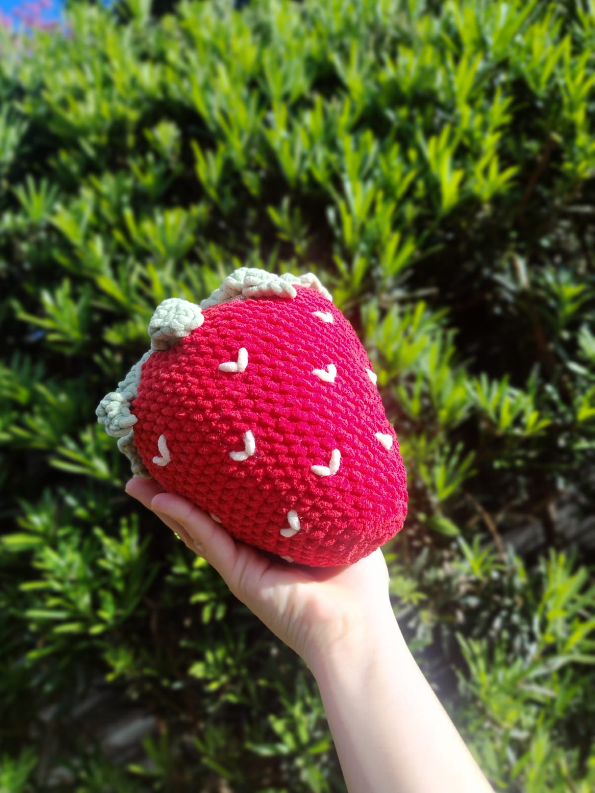

Almofada de Morango
R$ 120,00
📏 Tamanho: aproximadamente 7cm de comprimento.
Descrição
Tamanho: 7cm de comprimento. Fio 100% Poliéster. Linha Chenille Circulo.
Informações
🧶 Feito à mão
🌹 Chaveiros artesanais em crochê
💕 Produzido com carinho
📦 Produto artesanal